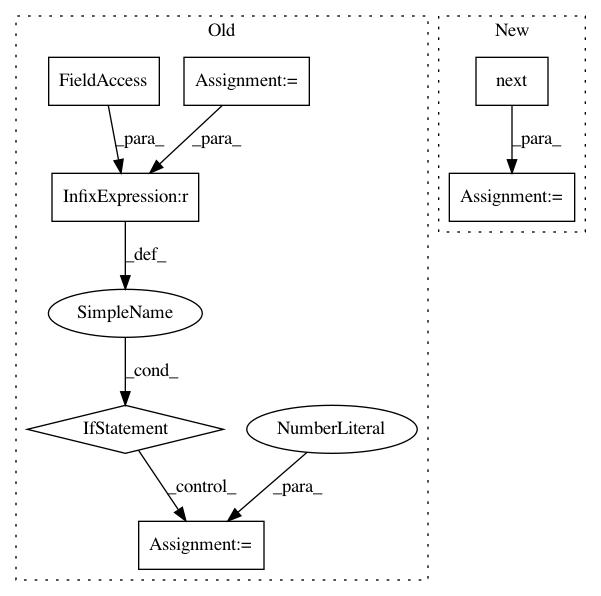

0365bae1c6b44654bc2ba74619581b18e594eadb,keras_frcnn/data_generators.py,SampleSelector,skip_sample_for_balanced_class,#SampleSelector#,79
Before Change
break
if class_in_img:
self.curr_class += 1
if self.curr_class == self.num_classes:
self.curr_class = 0
return False
else:
return True
After Change
def skip_sample_for_balanced_class(self, img_data):
curr_class = self.class_cycle.next()
class_in_img = False
for bbox in img_data["bboxes"]:
In pattern: SUPERPATTERN
Frequency: 3
Non-data size: 7
Instances
Project Name: kbardool/keras-frcnn
Commit Name: 0365bae1c6b44654bc2ba74619581b18e594eadb
Time: 2017-02-15
Author: kiri@winged-delica.telus
File Name: keras_frcnn/data_generators.py
Class Name: SampleSelector
Method Name: skip_sample_for_balanced_class
Project Name: ANSSI-FR/SecuML
Commit Name: 39efccc696a1c20745a52cc50935cdc24f92230d
Time: 2019-05-09
Author: anael.beaugnon@ssi.gouv.fr
File Name: secuml/core/classif/classifiers/__init__.py
Class Name: Classifier
Method Name: _predict_streaming
Project Name: kbardool/keras-frcnn
Commit Name: 8c934629688a2213f0855017a63b09a076cdc941
Time: 2017-02-15
Author: yannhenon@gmail.com
File Name: keras_frcnn/data_generators.py
Class Name: SampleSelector
Method Name: skip_sample_for_balanced_class